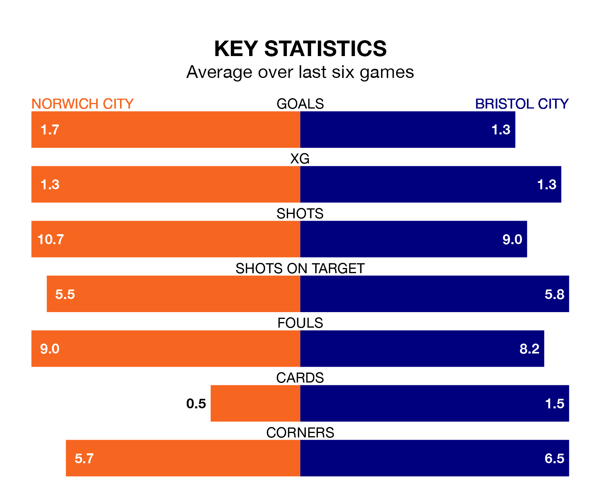

Norwich City face a challenge to maintain their high-scoring form at home against a tight Bristol City defence on Saturday.
With 76 goals in 43 games, Norwich are the joint-fourth-highest scorers in EFL Championship ahead of the 3pm kick-off at Carrow Road.
They face a Robins side who have scored 50 in 43 matches, but conceded only 46 goals, putting them fourth among the league's tightest defences – only Leicester City, Leeds United and West Bromwich Albion have conceded fewer goals.
In the last 10 years, Norwich and Bristol City have played each other on 12 occasions. Norwich won eight of them, Bristol City one, and they drew three times.
On average, the Canaries scored 1.6 goals and the Robins 0.8 in those matches.
Their last meeting was on December 3, when Norwich won 2-1 away.
Norwich are sixth in the table after 43 games, of which they have won 21 and drawn eight, earning 71 points.
Bristol City are six places behind Norwich City in 12th, with 16 wins and 10 draws putting them on 58 points.
In Joshua Sargent, the Canaries have one of the league's sharpest shooters so far this season. He has notched 15 goals in 23 appearances, to sit fifth in the scoring charts.
His goal rate of one every 107 minutes is much quicker than that of Tommy Conway, the Robins' top scorer with a goal every 233 minutes, and a total of nine goals in 36 games.
The hosts are in good form in EFL Championship, with four wins and a draw from their last six games.
With three wins and two draws over that period, the away team's form is slightly worse – they have taken 11 points from 18, compared to Norwich's 13.
Norwich's last match was on April 13, a 1-0 win against Preston North End, with Gabriel Sara getting the goal for the Canaries.
Bristol City drew 1-1 with Huddersfield Town last time out, also on April 13, with Nahki Wells on the scoresheet.
Updated: 15:40 (UTC), 18/04/24